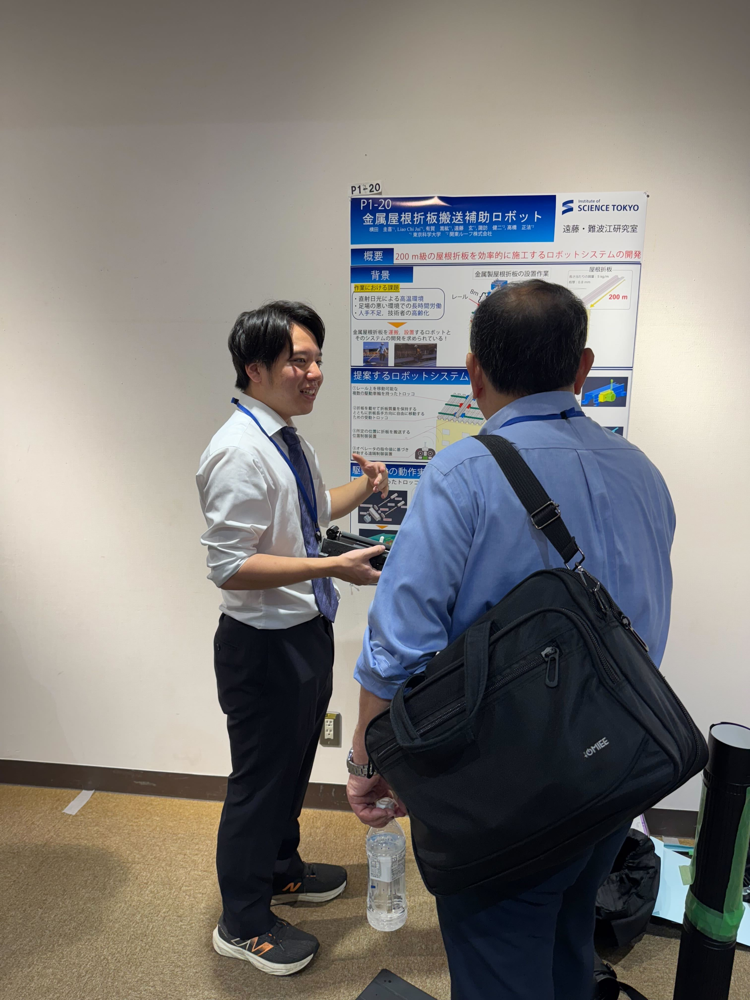
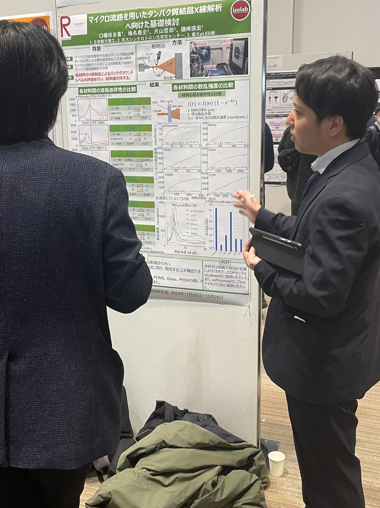
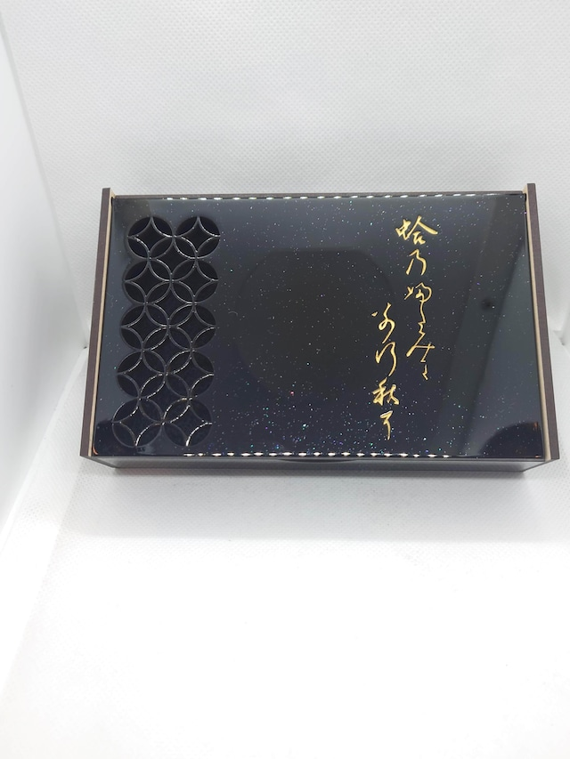

About
こんにちは、東京科学大学 工学院 機械系 修士1年の横田圭喜です。
モノづくりが好きで、ハードウェアの設計からソフトウェアの開発まで、自分の手で形にしていくことに魅力を感じています。
機械設計や電子回路、プログラミングなど、分野をまたいで試行錯誤しながら動くものを作る時間が一番楽しいです。
作って、動かして、改良していく中で、少しずつ自分のイメージに近づいていく瞬間が好きです。
Works

屋根折板搬送補助ロボット
200m級の金属屋根材を複数台ロボットで協調搬送するシステムを開発。制御設計や実機製作を行い、動作検証を進めています。

学部時代の研究：搬送機構の制御設計
学部では、長尺材を安定して搬送するための機構設計と制御アルゴリズムの検討を行いました。実験を通してロボット制御の基礎を学びました。

病院の子供たちに贈るおもちゃ作製
小児病棟の子どもたちが楽しめるように、手作りのインタラクティブなおもちゃを制作。安全性と操作のしやすさを重視しました。

3Dプリンタ作品のフリーマーケット出店
自作のキーホルダーや小物を3Dプリンタで製作し、フリーマーケットで販売。デザインから販売までの一連の流れを体験しました。


趣味の自作PC
性能とデザインのバランスを考えながら、自分でパーツを選定・組み立て。ハード構成や冷却効率の最適化にもこだわっています。
Contact
ご興味を持っていただけましたら、お気軽にご連絡ください。